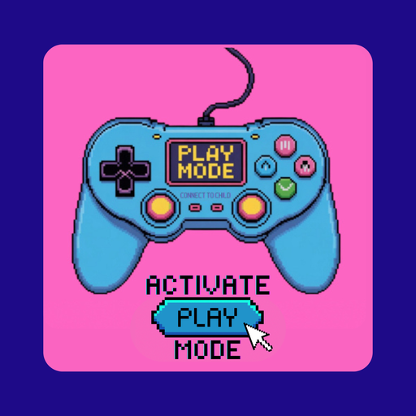

Bringing inanimate objects to life as a playful “buffer,” like a toy, bite of food, or your own foot!
- The hungry laundry hamper desperate for stinky socks
- Broccoli wanting a haircut - "Just a trim!"
- "Sugar bugs" begging you not to brush them away
If you do not see this option, open the app in Safari and use the same steps
You may also see an Install button in the address bar
Look in the browser menu for Install or Add to Home Screen
Installing adds an icon to your home screen and makes it function just like an app

Tap a strategy for summary & example videos
💛 Loving Reminder: Practice play when stakes are low and vibes are good — Rule #1: For the sake of fun!
⚡ POWER REVERSAL
Kiddo = strong, clever, powerful.
Grownup = confused, weak, foolish, scared, wrong, “furious.”
Bringing inanimate objects to life as a playful “buffer,” like a toy, bite of food, or your own foot!
Using robotic, automated, or system-like behaviors, like pretending to be a robot or machine.
Pretending to be dramatically surprised or horrified when your child does exactly what you were hoping for — or just being downright clueless and wrong - a playful twist they love being in on.
Turning tasks or tricky moments into a game, challenge, or silly contest.
Something mysterious or magical is happening. React with confusion, astonishment, or awe.
Incorporating songs, rhythms, and dancing into routines, tasks, or challenging moments.
Pretending to be anyone or anything but yourself OR that your child is a character.
Narrating reality or collaborating on a fictional story for processing, connection, regulation, repair.
Using dramatic, poetic, or VIP language to frame boring stuff as fun or fancy.
Making breathing, movement, and physical contact fun, helping everyone reset and regulate.
Random silliness to diffuse tension — nicknames, banana phones, fart noises, silly faces & sounds.
Playing the Opposite: "If you [do x,y,x], I’m gonna make the biggest fart noise… so you better not!"
Make it a Musical: Singing or chanting instructions instead of speaking them. Bonus points for light choreo.
General Nonsense: Making gibberish instructions and acting confused why they can’t understand you, or incorporating silly instructions into the mix like “Now squat down and bawk like a chicken.” “Okay, now jump in the air and make a fart noise.”
Mechanical Play: Trying to figure out which “button” makes them do the function you want on an imaginary remote control, throwing in silly ones for fun like, “Oh THIS button must make them put their laundry in the hamper, I’m SURE it won’t make them start hopping like a frog…” and then “Welp, I guess this remote control is broken… unless THIS is the button, this weird looking one, but it couldn’t be… Could it?!”
Characters & Role Play: Game show host or ringleader voice, “Step right up, ladies and gents, and welcome to the handwashing show! Today our brave performer will be washing ALL the germs off his hands. Watch in amazement!” Then be the voice of the audience *ooohhh… ahhhh*!
Magic & Mystery: Simply pretend to be frozen and say through clenched teeth, “What’s going on… I’m stuck… I can’t move. I guess I’ll be frozen until someone [thing they need to do]”
Playing the Opposite: "Don’t you dare [do x,y,z] by the time I get back! I want to boss you around, so I’ll be so mad if you do it before I get to tell you to!!”
Magic & Mystery: “Wait a second, I see some dirty socks over there on the floor! Hmm… hope we don’t have sock elves. I’m gonna go grab my coffee and if I come back and those socks are gone and in the hamper, then I’ll KNOW we have sock elves and I’ll be totally freaked out!”
Mechanical Play: “Beep boop. Activating clean-up mode. Anything in my path will be destroyed or trashed. Clean-up mode commencing…”
Make it a Musical: Turn on an upbeat song and see how many times it has to repeat before a chore is finished. Bonus points for cleaning to the beat.
Challenges & Gamifying: Take a time-lapse video and challenge each other to sneak in dance moves to try and spot when you watch it back.
Playing the Opposite: “There’s no WAYYY you can put all those blocks back in the bin before I get back from the bathroom. I’d never believe it in a million years!”
Mechanical Play: “Polite auto-translator activated.” *translate what they said into a more polite version*
Magic & Mystery: Freeze until you hear a polite request or act like you’re trying to fulfill their request but are behind a force field.
Make it a Musical: Gentle silly songs reminding how to speak kindly, even if they’re made up on the spot and don’t rhyme.
Mechanical Play: “I am your automated bath assistant. Will you be requiring a towel this evening? Press here for yes. Press here for no.”
Characters & Role Play: Bath time coffee shop customers.
Romanticizing the Mundane: Bath = spa. Bedroom = hotel.
General Nonsense: Wrapping them up in extra towels for no reason.
Magic & Mystery: Making an "Abrapajama!" transition video by using the "pause" feature on your phone and showing the before/after of them ready for bed.
Challenges & Gamifying: “Who can make the most bubbles?”
Magic & Mystery: “What in the world? There’s a lion in your mouth! Hey now there’s a hippo! Get out of there, hippo!”
Personification: “Sugar bugs” begging to not be brushed out.
Storytelling: “Once there was a toothbrush named Matilda who dared to explore a big dark, stinky cave…”
Make it a Musical: Singing high notes and low notes to guide them where to brush, speeding up and slowing down tempo for brushing pace.
Playing the Opposite: Don’t brush too well, or your smile might be so bright it scares me!
Mechanical Play: “Doo-doo-doo! Welcome to the game of life. Earn five points by putting on your pants” (video game narrator voice).
Playing the Opposite: “Wait a second… you can’t get dressed all by yourself. Little kids don’t know how to do that, do they!?”
Make it a Musical: Making up a parody to a well-known tune like “If you’re happy and you know it” - “Can you put your pants on your… head!?”
Challenges & Gamifying: “Do you think you can get dressed with your eyes closed??”
Mechanical Play: “I didn’t mean to snap at you like that. Can you press my rewind button so I can try again? Press right here, on my nose…”
Storytelling: At the end of the day, make up a story that has some silliness in it but also reflects the theme of what happened (i.e. “The mama panda who roared really loud and scared her baby”)
Characters & Role Play: Physically stepping out of the room and coming back in as a different funny alter ego character OR coming back in as your more centered self and saying, “Was there a grumpy Mommy/Daddy here a second ago? Well, I’m here and I feel like having some fun now!”
Like this format? The Playful Ideas Vault is always growing in our private Activate Play Mode community — searchable database of ideas organized by challenge!
Join our private community
Play Mode ActivatorsCourse Access
• Set up course audio access: Listen on the podcast player of your choice
• Activate Play Mode Guidebook PDF
Questions, feedback, tech troubles, or something to share?
Email Mia at mia@playfulheartparenting.com
© 2025 Mia Wisinski, Playful Heart Parenting.
This app is for personal use only by those who have purchased the Activate Play Mode course from Playful Heart Parenting. Please do not share this link publicly or distribute without explicit permission.